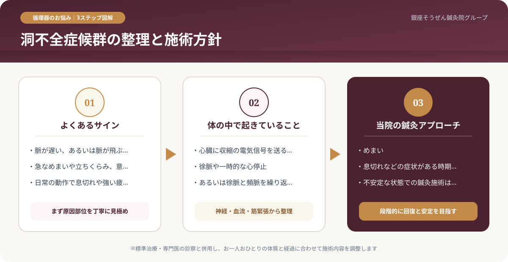

洞不全症候群の鍼灸
心臓の拍動を指令する洞結節の働きが低下し徐脈や動悸を起こす病気です。専門医管理を最優先に、安定期の体調を整えます。
まず知っておきたい要点と改善の流れ

心臓に収縮の電気信号を送る「洞結節」の働きに異常が生じ、徐脈や一時的な心停止、あるいは徐脈と頻脈を繰り返す病気です。多くは加齢などによる洞結節の変性を含む特発性ですが、冠動脈疾患や心筋症、心筋炎、心臓手術後の影響、抗不整脈薬の作用、自律神経のアンバランスが関与する場合もあります。3〜5秒以上脈が止まると失神を起こす危険があり、循環器内科での心電図評価やペースメーカー治療の検討が不可欠です。
このようなお悩みはありませんか？
- ✓脈が遅い、あるいは脈が飛ぶ・速くなる感覚がある
- ✓急なめまいや立ちくらみ、意識が遠のく感じがある
- ✓日常の動作で息切れや強い疲労感・倦怠感が出やすい
- ✓不整脈への不安感や自律神経の乱れを穏やかに整えたい
当院の施術アプローチ・改善の流れ
なぜ鍼灸で改善へ向かうのか？（作用機序の図解）
洞不全症候群に対する鍼灸は、心拍変動・血管トーンを整える自律神経サポート機序を通じて、お体本来の回復力を引き出します。

循環器専門医の標準治療を絶対前提とし、手首や背部の安全な経穴へ低刺激でアプローチします。
心臓への過剰な交感神経刺激を穏やかに鎮め、心拍リズムと血管緊張の急変を抑えます。
ストレスで固まりやすい胸郭や横隔膜の緊張を解き、酸素摂取とリラックス反応を促します。
内服管理を厳守しながら、疲労やストレスが引き金となる症状不安の軽減を支えます。
院長YouTube解説・関連動画
公開日：２０２１年 １１月 １日
更新日：２０２１年 １２月 ３日
本日は洞不全症候群について解説させていただきます。
☆本記事の内容
- •洞不全症候群とは
- •洞不全症候群の原因
- •洞不全症候群の症状
- •洞不全症候群の改善方法
- •洞不全症候群のまとめ
- •洞不全症候群は、洞結節の働きに異常が出る
- •ほとんどの洞不全症候群は、明らかな原因がわからない特発性
- •洞不全症候群の症状は、主に脈が遅くなることに関係して現れる
- •洞不全症候群の改善方法は、心臓ペースメーカー移植
- •症状が現れたら早めに病院に行く
- •洞不全症候群の改善例
銀座そうぜん鍼灸院の宗前です。
このページを書いている私は、鍼灸師として１３年、担当した利用者様数８０，０００人を誇り、病気の休職者３００人を社会復帰できるまで回復させてきた実績があります。
洞不全症候群の症状は、主に脈が遅くなることに関係して現れる
洞不全症候群の症状は、主に脈が遅くなることに関係して現れます。長い洞停止の場合は、失神やめまい、眼前暗黒感などの症状が現れます。これは、脳への血流が十分でなくなることによって現れる症状です。
洞徐脈が続く場合は、心拍出量が下がることで息切れや全身の倦怠感、浮腫などの症状が現れることもあります。
ただし、脈が遅くなっている時に必ず症状が現れるわけではありません。いろいろな状況が合わさって症状として現れるため、場合によって現れる症状は違うのです。
洞性不全症候群は、心臓の洞結節の機能が低下することによって引き起こされる状態です。洞結節は心臓のリズムを制御する役割を果たしており、その機能が低下すると様々な症状が現れることがあります。以下に、洞性不全症候群の主な症状を詳しく説明します。
不整脈：洞性不全症候群の主な症状の一つは、不整脈です。洞結節の機能低下により、心拍数やリズムが不規則になることがあります。以下に代表的な不整脈の症状を挙げます。
頻脈：心拍数が通常よりも速くなります。
遅脈：心拍数が通常よりも遅くなります。
無脈：一時的に心拍が止まることがあります。
不規則なリズム：心拍が不規則になり、一定のパターンがないことがあります。
疲労感と倦怠感：洞性不全症候群では、疲労感や倦怠感を経験することがあります。心臓のリズムの不規則さや効率の低下により、十分な酸素や栄養素が全身に供給されず、体力の低下や倦怠感が現れることがあります。
めまいと失神：洞性不全症候群による不正な心拍数や低血圧の影響で、めまいや失神が起こることがあります。心臓のリズムが不規則になり、十分な血液が脳に供給されないため、めまいや一時的な意識喪失が発生することがあります。
呼吸困難：洞性不全症候群では、呼吸困難を経験することがあります。心臓のリズムが不規則になると、心臓が効果的に血液を送り出せず、肺に適切な酸素供給が行われなくなるため、呼吸困難が生じることがあります。
不安と心の動揺：洞性不全症候群による症状や不整脈の発作は、心理的な不安や心の動揺を引き起こすことがあります。不安感や不安定な心境、心配や恐怖感を抱くことが多くなるかもしれません。
その他の症状：洞性不全症候群の他の一般的な症状には以下が含まれます。
胸痛や圧迫感
頭痛や集中力の低下
消化器系の不快感（例：吐き気、食欲不振）
睡眠障害や不眠症
発汗やふるえ感
これらの症状は、洞性不全症候群の程度や進行度によって異なる場合があります。症状の重症度や頻度は個人によって異なります。
洞不全症候群の改善方法は、心臓ペースメーカー移植です。ぺースメーカーを移植することによって、特に大きな制限なく日常生活を送ることができることが多いです。
現れている症状や症状の程度によっては、薬を使って改善を行うこともあります。
洞不全症候群は、心臓の洞結節の機能低下によって引き起こされる状態です。この症状に対する改善方法は、症状の程度や状態によって異なります。以下では、洞不全症候群の改善方法について詳しく説明します。
症状の管理：洞不全症候群による症状を管理するために、以下の方法が使用されます。
不整脈薬：心拍数の調節やリズムの安定化のために、特定の薬物が処方されることがあります。例えば、β遮断薬やカルシウム拮抗薬が使用されることがあります。
心臓ペースメーカー：洞不全症候群による洞結節の機能低下が著しい場合、心臓ペースメーカーが必要な場合があります。心臓ペースメーカーは洞結節の働きを補完し、心拍数を制御する役割を果たします。
合併症の管理：
洞不全症候群は他の心臓の病気と合併することがありますので、その合併症の管理も重要です。
心房細動の管理：洞性不全症候群によって心房細動が引き起こされることがありますので、抗凝固薬や抗不整脈薬が必要な場合があります。
心不全の管理：心不全の症状がある場合は、利尿剤や血管拡張剤、心不全治療薬が使用されることがあります。
生活習慣の改善：
洞不全症候群の改善において、生活習慣の改善も重要です。以下の点に注意することが推奨されます。
健康的な食事：バランスの取れた食事を摂取し、塩分や脂肪の摂取を制限することが推奨されます。
適度な運動：医師の指導のもとで適度な運動を行うことで、心臓の健康をサポートすることができます。
禁煙：喫煙は心血管系の病気のリスクを高めるため、禁煙することが推奨されます。
定期的なフォローアップ：
洞不全症候群の改善では、定期的なフォローアップが必要です。医師の指示に従い、定期的に心電図や心エコーなどを受けることが重要です。これにより、効果や病状の進行をモニタリングし、必要に応じて計画を調整することができます。
緊急時の対応：
洞不全症候群による意識喪失や胸痛などの緊急事態が発生した場合は、適切な応急処置が必要です。家族や身近な人に心肺蘇生法（CPR）を学ぶことや、救急に迅速な連絡を行うことが重要です。
多くの洞不全症候群は原因が明らかではありません。そのため、予防することは難しいです。
洞不全症候群であると判断されても症状がない場合は、自分の体調を気にして症状が現れることに注意して生活をすることが大事です。めまいや息切れ、動悸などの症状が現れたら早めに病院に行くことをお勧めします。
洞不全症候群の改善例
「田中明子、62歳女性、洞不全症候群であるとされてから1年間の経過がある場合」
田中明子さんは1年前に息切れやめまいを訴えて来院しました。心電図で、心拍数が遅くなる傾向があり、洞不全症候群の疑いが生じました。心臓ホルターモニターを装着し、24時間の心拍数モニタリングを行いました。その結果、洞結節の機能低下が確認され、洞不全症候群とされました。
心拍数の管理：田中明子さんの主な症状である息切れやめまいを軽減するために、以下の治療法が適用されました。
心臓ペースメーカー：洞不全症候群による洞結節の機能低下が著しいため、心臓ペースメーカーの埋め込み手術が行われました。ペースメーカーは洞結節の働きを補完し、心拍数を制御する役割を果たします。
合併症の管理：田中明子さんは高血圧と糖尿病の既往歴があり、これらの合併症の管理も行われました。
高血圧の改善：降圧薬（ACE阻害剤やカルシウム拮抗薬）が処方され、血圧の安定化が図られました。
糖尿病管理：血糖値の管理には食事、適切な運動、血糖降下薬が使用されました。
生活スタイルの改善：田中明子さんには、健康的な生活習慣の重要性が説明されました。
食事の改善：バランスの取れた食事を摂取し、塩分や脂肪の摂取を制限することが推奨されました。
適度な運動：医師の指導のもとで適度な運動を行うことで、心臓の健康をサポートすることができます。
定期的なフォローアップ：田中明子さんは定期的なフォローアップを受け、心電図や心臓エコーなどが行われました。これにより、心臓の機能や症状のモニタリングが行われ、計画の最適化が図られました。
田中明子さんは心臓ペースメーカーの埋め込み手術後、症状の改善が見られました。息切れやめまいが軽減され、日常生活への影響が減少しました。定期的なフォローアップと改善の継続により、心臓の機能の安定化が図られました。
田中明子さんは定期的なフォローアップと改善の継続により、洞不全症候群の症状の管理が行われています。田中明子さんの将来の展望については以下のようなものです。
定期的なフォローアップと改善の継続：田中明子さんは定期的なフォローアップを受けることで、心臓の状態や改善の効果をモニタリングします。医師の指示に従い、心臓や血液を定期的に調べることが重要です。これにより、改善の最適化や合併症の早期発見が可能となります。
生活習慣の維持：田中明子さんは健康的な生活習慣の維持に取り組むことが重要です。バランスの取れた食事、適度な運動、禁煙、適切なストレス管理などが心臓の健康をサポートします。医師や栄養士の指導に従い、日常生活での健康増進を意識することが重要です。
心理的サポート：洞不全症候群の改善や症状には心理的な負担が伴うことがあります。田中明子さんは必要に応じて心理的なサポートを受けることができます。カウンセリングやサポートグループへの参加などによって心の安定を図ることができます。
緊急時の対応：田中明子さんは洞不全症候群による緊急事態への対応策も知っておく必要があります。自身や身近な人が心肺蘇生法（CPR）を学ぶことや、緊急時の連絡先を確認することが重要です。これにより、心臓発作などの緊急時に迅速な対応が可能となります。
洞不全症候群の改善は個人に合わせて行われるべきです。田中明子さんは医師の指導のもと、定期的なフォローアップと改善の継続を行うことで、症状の改善と心臓の健康状態の維持を目指すことができます。
メニエール病・難治性めまい・耳鳴りのツボ図解
実際の施術ではお一人おひとりの体質・症状に合わせて選穴しますが、メニエール病・前庭性片頭痛・耳鳴り・難治性めまいの内耳循環ケアの臨床でよく用いられる代表的なツボの目安です。

📌 代表的なツボの詳細一覧表を開く（6穴） ▼
| ツボ名 | 位置の目安 | 主な狙い | セルフケアの注意点 |
|---|---|---|---|
| 聴宮（ちょうきゅう） | 耳の穴の前、口を開けるとくぼむ場所 | 内耳周囲の微小循環改善・耳閉感や耳鳴りケア | 強く押さず口を少し開けて優しく触れます。 |
| 翳風（えいふう） | 耳たぶのすぐ後ろのくぼみ | 内耳・三叉神経・顔面周囲の血流とリンパ循環促進 | めまい発作直後は首を動かさず静かに温めます。 |
| 風池（ふうち） | 後頭部の生え際のくぼみ | 後頭下筋群の緊張緩和・椎骨動脈血流サポート | 親指で上向きに優しく支えるように押します。 |
| 完骨（かんこつ） | 耳の後ろの出っ張った骨の下後ろ | 平衡感覚の安定・睡眠の質改善 | 左右の張りを比べながら優しく緩めます。 |
| 内関（ないかん） | 手首の横ジワから指3本分肘寄りの中央 | めまいに伴う吐き気・自律神経発作の鎮静 | めまいが出そうなときのセルフ指圧にも有効です。 |
| 太衝（たいしょう） | 足の甲、親指と人差し指の骨の間 | ストレス性の内リンパ水腫悪化・イライラの緩和 | 深呼吸と合わせて3〜5秒ずつ押します。 |
国際査読論文の科学的エビデンス
国際的な医学データベース（PubMed・Cochrane等）で報告されているメニエール病・前庭性片頭痛・耳鳴り・難治性めまいの内耳循環ケア領域の代表的な査読済み鍼灸研究をまとめています（標準治療との併用や研究上の限界を含めて正確に掲載）。
📚 査読論文データ・PubMed出典リンクを開く（4件） ▼
| 年・研究デザイン | 対象・規模 | 主な結果 | 限界・出典 |
|---|---|---|---|
| 2019年 大規模多施設RCT | 慢性安定狭心症 398名解析（標準薬物療法併用） | 16週時点の4週間発作減少は実鍼群がシャム群比5.18回・待機群比5.63回多く有意改善（P<0.001）。 | 標準薬物療法への併用（補完）試験であり単独療法ではない。 JAMA Intern Med (PMID: 31355870) |
| 2007年 シャム対照RCT | 本態性高血圧 140名完了（ドイツ・24時間ABPM） | 治療終了時の24時間血圧はシャム比SBP -6.4mmHg・DBP -3.7mmHg有意低下（P<0.001）。 | 終了3〜6か月で治療前水準へ戻るため継続ケアが必要。 Circulation (PMID: 17548730) |
| 2015年 メタ解析 | 高血圧 23 RCTs（n=1,788） | 降圧薬＋実鍼は降圧薬＋シャム比でSBP -7.47mmHg・DBP -4.22mmHg有意低下。鍼単独は降圧薬と同等・根拠不十分。 | 盲検化・異質性に課題。降圧薬の自己中断は厳禁。 PLoS One (PMID: 26207806) |
| 2025年 メタ解析 | 心拍変動（HRV）10 RCTs（n=744） | 自律神経全体の適応指標SDNNを有意に改善、重篤な有害事象なし。 | LF・HFには不確実性が高くさらなる検証が必要。 Front Neurosci (PMID: 41230507) |
参考文献・出典
- 2019年 大規模多施設RCT（慢性安定狭心症 398名解析（標準薬物療法併用））— JAMA Intern Med (PMID: 31355870)
- 2007年 シャム対照RCT（本態性高血圧 140名完了（ドイツ・24時間ABPM））— Circulation (PMID: 17548730)
- 2015年 メタ解析（高血圧 23 RCTs（n=1,788））— PLoS One (PMID: 26207806)
- 2025年 メタ解析（心拍変動（HRV）10 RCTs（n=744））— Front Neurosci (PMID: 41230507)
よくある質問（FAQ）
Q. 心臓ペースメーカーを入れていても鍼灸を受けられますか？▼
Q. めまいや動悸が出たときにまず何をすべきですか？▼
あわせて読まれる関連疾患（循環器のお悩み）
心房内に異常な電気回路ができ拍動が速くなる不整脈です。循環器内科の標準治療を最優先に、安定期には内関等で自律神経を整えます。
心房と心室の間に副伝導路があることで頻脈発作が起こる先天性不整脈です。循環器内科の診断・治療を最優先に、安定期の自律神経ケアを行います。
水分の過剰摂取で血液のナトリウム濃度が急低下する危険な状態です。急性期は救急対応が最優先で、安定期のストレス管理を支援します。
TBX5遺伝子変異により先天性心疾患と上肢・手の形成異常を伴う希少疾患です。循環器・整形外科の管理を最優先に、安定期の筋緊張等を補完ケアします。
生まれつき三尖弁の働きが悪く血液逆流が生じる先天性心疾患です。専門医での管理を最優先とし、安定期の疲労や緊張を穏やかにケアします。
生まれつき左右の心室が入れ替わっている先天性心疾患です。無症状でも専門医の定期管理を最優先し、安定期の体調を支えます。
CLINICAL RECOVERY CASES
✨ 実際の臨床改善事例・回復経過を見る
銀座本院をはじめ各院での実際の改善事例を症状別に絞り込んでご確認いただけます。
おひとりで悩まず、まずはご相談ください
銀座本院・川口・大宮・横浜・博多・田無の各院でご予約を承っております。